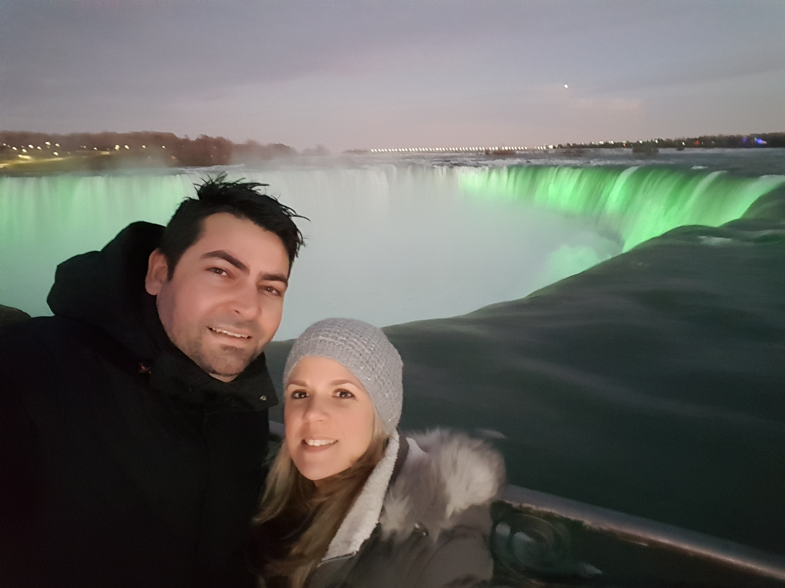

Toronto Eaton Center
The Toronto Eaton Centre is a shopping mall and office complex in the downtown core of Toronto, Ontario, Canada. It is owned and managed by Cadillac Fairview. It was named after the Eaton's department store chain that once anchored it before the chain became defunct in the late 1990s.
Niagara Falls
Niagara Falls is a city on the Niagara River, in New York State. It’s known for the vast Niagara Falls, which straddle the Canadian border. In Niagara Falls State Park, the Observation Tower, at Prospect Point, juts out over Niagara Gorge for a view of all 3 waterfalls. Trails from the Niagara Gorge Discovery Center lead to other viewpoints. The Aquarium of Niagara is home to Humboldt penguins, seals and sea lions.
Nathan Phillips Square

Nathan Phillips Square is an urban plaza in Toronto, Ontario, Canada. It forms the forecourt to Toronto City Hall, or New City Hall, at the intersection of Queen Street West and Bay Street, and is named for Nathan Phillips, mayor of Toronto from 1955 to 1962.
Brooklyn Bridge

The Brooklyn Bridge is a hybrid cable-stayed/suspension bridge in New York City and is one of the oldest roadway bridges in the United States. Started in 1869 and completed fourteen years later in 1883, it connects the boroughs of Manhattan and Brooklyn, spanning the East River.
Statue of Liberty
The Statue of Liberty is a colossal neoclassical sculpture on Liberty Island in New York Harbor in New York City, in the United States. The copper statue, a gift from the people of France to the people of the United States, was designed by French sculptor Frédéric Auguste Bartholdi and built by Gustave Eiffel.